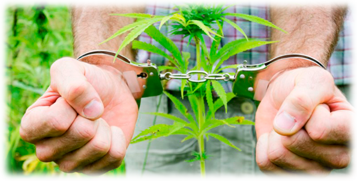
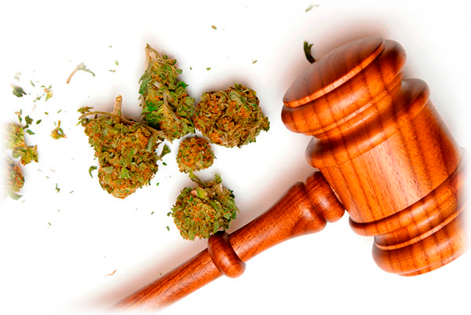

Не знание закона не освобождает от ответственности! Ознакомьтесь со всеми видами нарушений предусмотренных Уголовным Кодексом Украины и Законом Украины, а так же разными статьями. Существует два вида ответственности за выращивание, хранение и употребление наркотических препаратов, в данном случае марихуаны - административная и уголовная. Выращивание марихуаны закон Украины 310, статьи 106-2, статья 309, 315.
Статьи Уголовеного Кодекса про выращивание марихуаны Закон Украины

Выращивание конопли в Украине и других странах СНГ запрещено и преследуеться законом. Ниже представлены адменистративные и уголовные наказание за совершение незаконных правонарушений. Кодекс Украины, в статье 106-2, предписывает административные правонарушения за посев и выращивание конопли в размере до 10 (десяти) растений. Такое правонарушение предусматривает штраф от 300 до 1700 гривен, и предусматривает конфискацию незаконно выращенных растений. Растением считается один корень, вне зависимости от количества ростков. При нахождении растений конопли до 10ти кустов, сотрудник правоохранительных органов составляет админ протокол, в результате которого решением суда уточняется размер штрафа.В случае когда выращивание растений конопли превышает 10 кустов, наступает уголовная ответственность. Созласно 310 статье Уголовного кодекса Украины, марихуаны варащивание в количестве от 10ти до 50ти растений, влечет за собой наложение штрафа от 1700 гривен до 9000 гривен, а так же/или арест гровера на срок до 6 месяцев с последующим/или ограничением сободы до 3х лет.
Так же, если выращиватель конопли добровольно выдал нарконические средства (марихуану, гашиш и тд), и помогал следствию в раскрытии дел с незаконным оборотом наркотиков, такое лицо освобождается от уголовной ответственности (но не административной) за производство, покупку, хранение или перевозку-пересылку.
Так же, важно отметить, что те кто притягивался ранее к ответственности по статьям 307, 309, 311, 317 и другим касательно изготовления, сбережения, распространения, хранения и тд накротических средств, в количестве от 50 и больше кустов марихуаны, должны быть готовы к лишению свободны на срок от 3х до 7ми лет.
Преступление признается таковым с мемента проращивания семени и высадки в грунт, вне зависимости от того даже если растение не взошло, высохло или погибло в результате заморозка. Приобретение семян конопли, подготовка расскады, грунта и тд, в судебной практике называется "подготовка к преступлению" и так же учитывается в суде при вынесениее приговора (ст. 310).
Любой процесс посадки и выращивание марихуаны, закон готов всегда присечь и наказать виновных!
Выращивание марихуаны Закон про дальнейшее хранение и перевозку
Статья 44 Уголовного кодекса Украины, предусматривает административное наказание за производство, покупку, хранение и перевозку марухуаны и ее производных в небольших количествах, без целей продажи, а только для личного употребления - такие действия наказываються штрафом от 300 до 700 гривен и арестом нарушившего лица сроком до 15 суток.
Количество конопли и ее производных, для получения административного наказания:

- смола каннабиса (гашиш, анаша) — до 0,5 грамм;
- масла, настойки, экстракт каннабиса — до 0,3 грамм;
- шишки и сухие верхушки растений с цветами (без учета зрелых семян из которых не выделена смола) — до 5 грамм;
- шишки и невысушенные верхушки растений с цветами (без учета зрелых семян из которых не выделена смола) — до 25 грамм.
Все превышающие нормы квалифицинуются как уголовные нарушения и наказываються или штрафом от 850 до 1700 гривен и сроком лишения свободы от 3-6 лет.
Администрация 4-20.com.ua снимает с себя любую ответственность за беззаконное использование конопли, для незаконных целей и противоречащих закону!